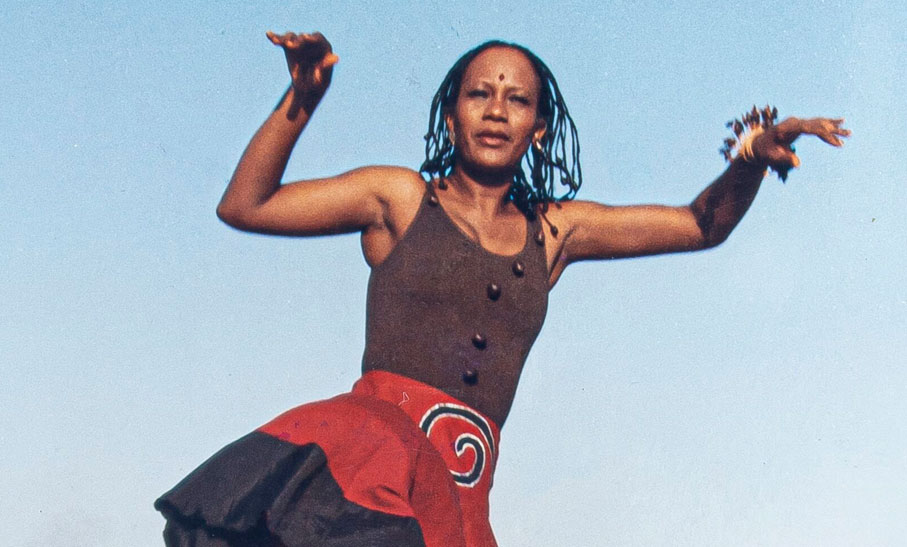
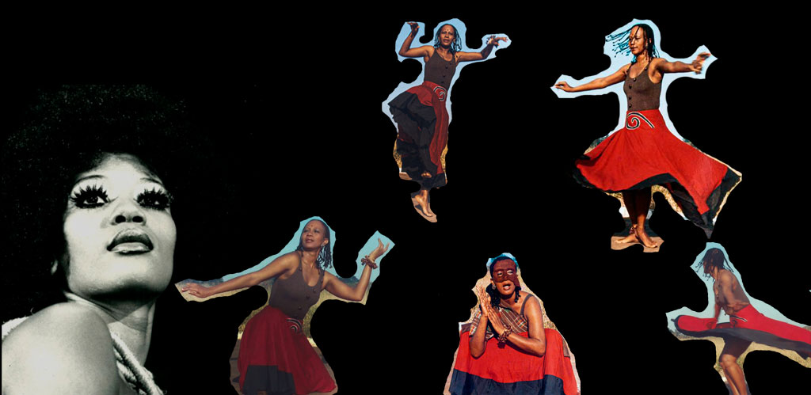

Este espaço virtual propõe uma experiência de conexão entre corpo, movimento e ancestralidade, inspirada na pedagogia transcendental de Inaicyra Falcão. Aqui, a dança é compreendida como um caminho de autoconhecimento, expressão e pertencimento cultural.
Nascida (Salvador BA) em 1958, hoje com 67 anos, é pesquisadora e educadora, cantora lírica, tem como comprometimento a difusão da cultura africana e afro-brasileira. Tem uma proposta de pedagogia transcendental em arte-educação identificando o sagrado no cotidiano e o cotidiano no sagrado, reafirmando a história pessoal na vivência da tradição e reelaborando essa tradição na origem da sociedade contemporânea. Sua principal obra é Corpo e ancestralidade: uma proposta pluricultural de dança-arte-educação (2021). Seu trabalho artístico como cantora inclui o álbum “Okan Awa: Cânticos da tradição Iorubá e sementes ancestrais (2002)”. Inaicyra Falcão utiliza o universo simbólico e mítico do tambor batá como um ponto de partida e um elemento integrador em sua obra, em consonância com sua proposta de pedagogia transcendental.
O estudo do batá e sua dança correspondente a inspiraram a desenvolver sua metodologia "Corpo e Ancestralidade: uma proposta pluricultural de dança-arte-educação".
Ela se apropria do simbolismo do batá para explorar as matrizes corporais, a memória e a expressividade no processo de criação. O tambor funciona como um catalisador que permite a articulação entre a tradição africana brasileira e a contemporaneidade na dança.
Um exemplo direto é a montagem cênica do poema "Ayán: Símbolo do Fogo", onde o batá é o tema central, representando Ayán, o espírito do tambor e orixá dos tocadores. O personagem Ayán é visto como o princípio vibrante que sintetiza elementos corporais, rítmicos, vocais e visuais.

Para Inaicyra, o tambor batá, além de ser um artefato estético, armazena memórias e narrativas ancestrais. A saudação a Ayán que ela destaca diz: “O tambor que faz as vozes das árvores soarem. Ele que nos leva para os lugares que nunca estivemos antes”, conectando o tambor ao movimento, à mobilidade dos corpos e ao deslocamento dos estados de consciência. O batá não é apenas um instrumento musical no trabalho de Inaicyra Falcão, mas sim um símbolo cultural e mítico fundamental que sustenta sua filosofia sobre a dança, a ancestralidade e a reinterpretação da tradição iorubá no contexto contemporâneo.

Inaicyra Falcão integra canto, dança e ancestralidade iorubá; usa o batá como símbolo criativo e pedagógico, unindo memória, corpo e tradição africana à cena contemporânea. e arte viva.